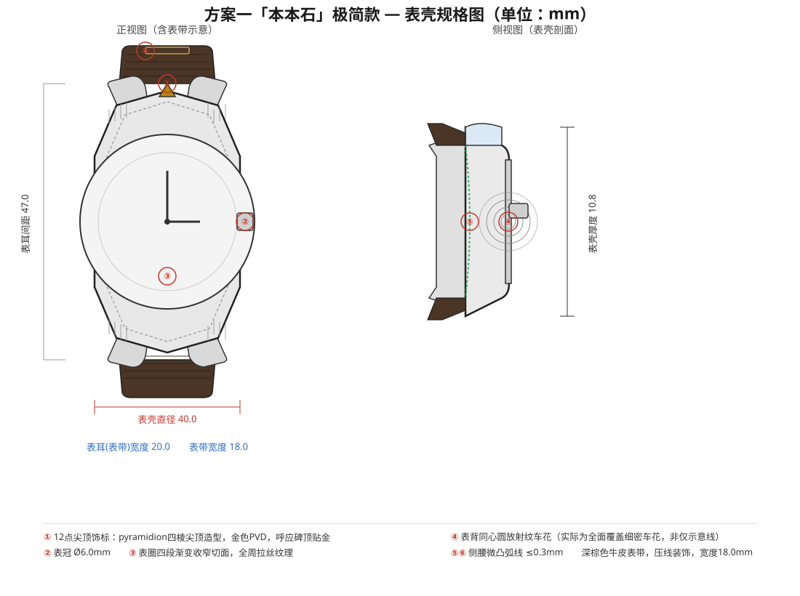
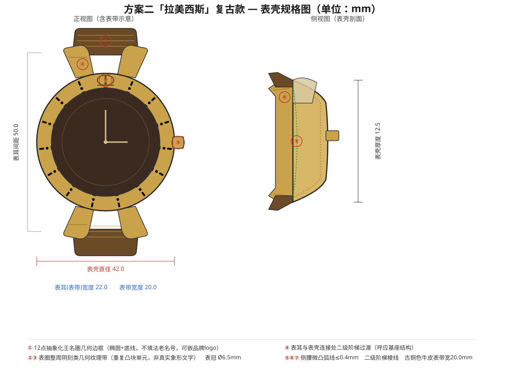
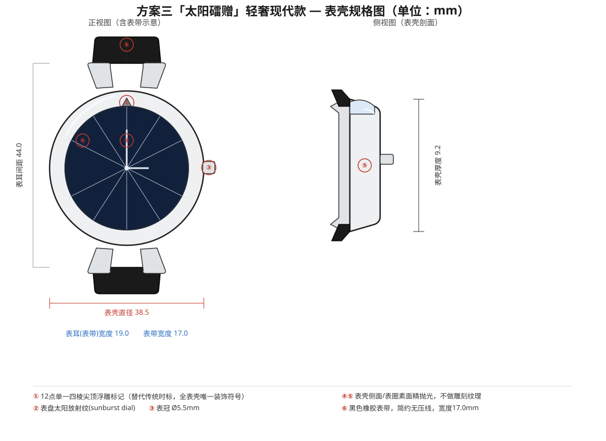

第 1 步 / 5
先选一款现有模具，
作为设计的起点
以下为现有模具库，表壳直径、表耳间距等尺寸均已固定；表壳厚度由您选择的机芯决定，其余材质、表盘、表带等均可自定义。


i
机芯先行，决定表壳结构
选定模具后，下一步配置器中的"机芯"选择（石英 / 自动机械）会决定实际表壳厚度结构，建议先确定机芯方向再细调外观。
?
没有找到合适的造型？
如果现有模具都无法满足您的造型需求，可以考虑全非标定制路径，从零开发专属模具（起订量 300 件）。